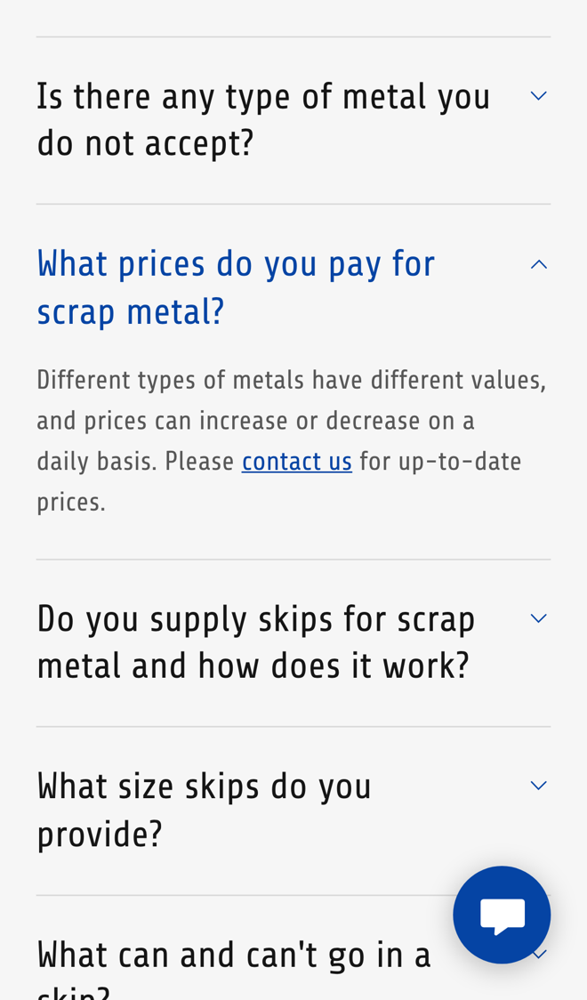

Allport Metal Recycling: fewer price calls, more scrap through the gate
I went through your website on a phone, the way someone with a scrap car or a trailer of metal would, and read your homepage, skip service, FAQs and visiting page. Your FAQs answer almost everything a first-timer worries about. Where I think you'd save time on the phone, and win more scrap, is prices and skip bookings.
What's already working
Three things I'd change
Give a scrap car price online
Your FAQs say "we pay for vehicles by weight. Prices can change therefore please contact us for an up-to-date price for End-of-Life Vehicles." They also say "we currently do NOT accept electric/hybrid vehicles."
Someone with a scrap car often asks more than one yard. The one that gives a price first, without a phone call, has the best chance of getting the car.
- They enter the registration and whether they'll bring it in. Electric and hybrid cars are told straight away that you can't take them.
- The page looks up the car's weight and works out a guide price from your rate for the day.
- They get a reference and what to bring (ID, bank details and the V5), and you get their details.
Show today's prices without a call
Asked "What prices do you pay for scrap metal?", your FAQs say "prices can increase or decrease on a daily basis. Please contact us for up-to-date prices."

Every "what are you paying for copper today?" call takes someone away from the weighbridge. People who can see a price are more likely to load up and come in.
- Each morning one of you types the day's prices into a simple form on your phone: copper, brass, lead, aluminium, steel.
- Your website shows today's prices with the date on them.
- Anyone who asks by text or WhatsApp gets today's prices sent back straight away.
Book skips with a date and reminder
Your Skip Service form asks for the address, "Skip Size" and "Waste Material". Your FAQs say skips stay "for up to 2 weeks" and you "deduct a haulage fee as discussed when you order the skip".
Each skip order means a call or email to agree the date and the haulage fee, and someone has to keep track of when each skip is due back.
- The skip form shows your free delivery dates and the haulage fee, as you set it, before they send it.
- They get a confirmation with what can and can't go in the skip.
- Near the end of the two weeks they get a text to book the collection, and you see every skip that's out in one list.
Your website, answering for you
An assistant that answers the questions you get asked again and again, at any hour. These answers come only from your own website: your FAQs, your visiting page and your opening hours.
Anything it can't answer, it passes to you with the customer's details.
What happens next
For five local businesses I'm setting up one of these for free, in return for an honest review. Pick whichever would help most.
I'm Tom Williams and I run Tomoni-AI. If a 20-minute chat would help, reply to my email or give me a ring.
Call 07971 512158Email Tom